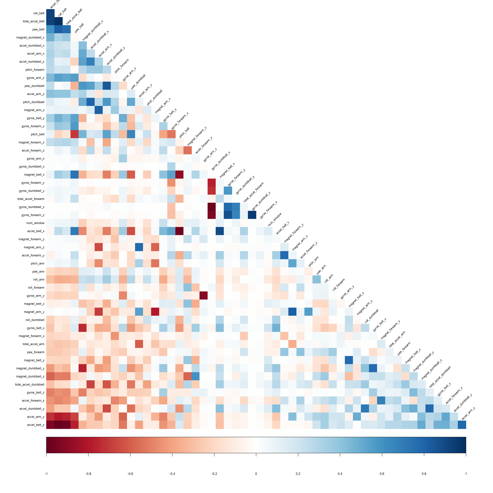
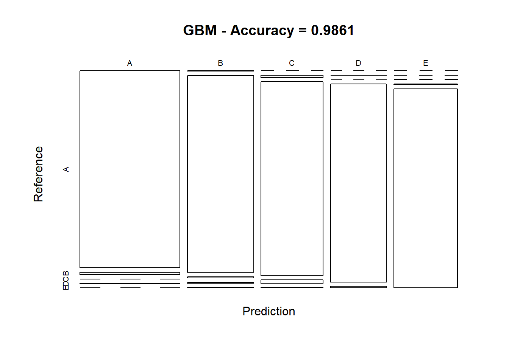
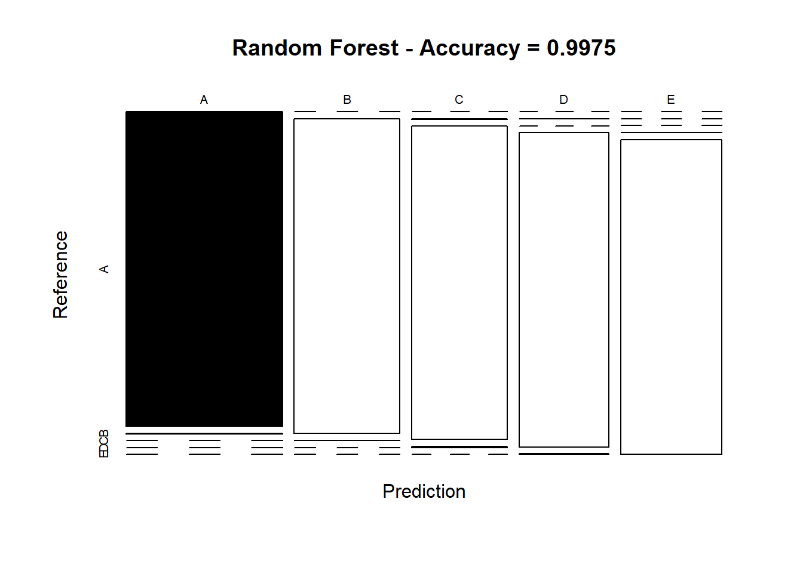

Using devices such as Jawbone Up, Nike FuelBand, and Fitbit it is now possible to collect a large amount of data about personal activity relatively inexpensively. These type of devices are part of the quantified self movement - a group of enthusiasts who take measurements about themselves regularly to improve their health, to find patterns in their behavior, or because they are tech geeks. One thing that people regularly do is quantify how much of a particular activity they do, but they rarely quantify how well they do it. In this project, your goal will be to use data from accelerometers on the belt, forearm, arm, and dumbell of 6 participants. They were asked to perform barbell lifts correctly and incorrectly in 5 different ways. More information is available from the website here (see the section on the Weight Lifting Exercise Dataset).
knitr::opts_chunk$set(echo = TRUE)
options(width=120)
library(caret)
library(pander)
library(randomForest)
library(corrplot)training.data <- read.csv("https://d396qusza40orc.cloudfront.net/predmachlearn/pml-training.csv")
testing.data <- read.csv("https://d396qusza40orc.cloudfront.net/predmachlearn/pml-testing.csv")If we look in Appendix A we can see that there is a large number of NA values so we will clean the dataset to begin with.
in.train <- createDataPartition(training.data$classe, p=0.7, list=FALSE)
training.data.cl <- training.data[in.train, ]
testing.data.cl <- training.data[-in.train, ]nzv <- nearZeroVar(training.data.cl, saveMetrics = T)
training.data.cl <- training.data.cl[, !nzv$nzv]
testing.data.cl <- testing.data.cl[, !nzv$nzv]nas <- (colSums(is.na(training.data.cl)) == 0)
training.data.cl <- training.data.cl[, nas]
testing.data.cl <- testing.data.cl[, nas]training.data.cl <- training.data.cl[ , -c(1:5)]
testing.data.cl <- testing.data.cl[ , -c(1:5)]cor.matrix <- cor(training.data.cl[, -54])
corrplot(cor.matrix, order="FPC", tl.cex=0.75, method="color", tl.col="black", tl.srt = 45, type="lower", diag = FALSE)
The highly correlated variables are shown in dark colours in the graph above. A PCA analysis won’t be performed due to the rather sparse nature of the correlations.
Both a GBM and RF model will be trained and the the results compared.
set.seed(56346)
GBM.ctl <-
trainControl(method = "repeatedcv",
number = 5,
repeats = 1)
GBM.fit <-
train(
classe ~ .,
data = training.data.cl,
method = "gbm",
trControl = GBM.ctl,
verbose = FALSE
)
GBM.fit$finalModel## A gradient boosted model with multinomial loss function.
## 150 iterations were performed.
## There were 53 predictors of which 43 had non-zero influence.GBM.predict <- predict(GBM.fit, newdata = testing.data.cl)
GBM.cfx <- confusionMatrix(GBM.predict, testing.data.cl$classe)
GBM.cfx## Confusion Matrix and Statistics
##
## Reference
## Prediction A B C D E
## A 1672 22 0 1 0
## B 2 1104 8 4 2
## C 0 12 1018 18 2
## D 0 1 0 938 7
## E 0 0 0 3 1071
##
## Overall Statistics
##
## Accuracy : 0.9861
## 95% CI : (0.9827, 0.9889)
## No Information Rate : 0.2845
## P-Value [Acc > NIR] : < 2.2e-16
##
## Kappa : 0.9824
## Mcnemar's Test P-Value : NA
##
## Statistics by Class:
##
## Class: A Class: B Class: C Class: D Class: E
## Sensitivity 0.9988 0.9693 0.9922 0.9730 0.9898
## Specificity 0.9945 0.9966 0.9934 0.9984 0.9994
## Pos Pred Value 0.9864 0.9857 0.9695 0.9915 0.9972
## Neg Pred Value 0.9995 0.9927 0.9983 0.9947 0.9977
## Prevalence 0.2845 0.1935 0.1743 0.1638 0.1839
## Detection Rate 0.2841 0.1876 0.1730 0.1594 0.1820
## Detection Prevalence 0.2880 0.1903 0.1784 0.1607 0.1825
## Balanced Accuracy 0.9967 0.9830 0.9928 0.9857 0.9946plot(GBM.cfx$table,
col = GBM.cfx$byClass,
main = paste("GBM - Accuracy =", round(GBM.cfx$overall['Accuracy'], 4)))
set.seed(56346)
random.forest.ctl <-
trainControl(method = "cv",
number = 3,
verboseIter = FALSE)
random.forest.fit <-
train(classe ~ .,
data = training.data.cl,
method = "rf",
trControl = random.forest.ctl)
random.forest.fit$finalModel##
## Call:
## randomForest(x = x, y = y, mtry = param$mtry)
## Type of random forest: classification
## Number of trees: 500
## No. of variables tried at each split: 27
##
## OOB estimate of error rate: 0.18%
## Confusion matrix:
## A B C D E class.error
## A 3904 1 0 0 1 0.0005120328
## B 4 2652 2 0 0 0.0022573363
## C 0 5 2390 1 0 0.0025041736
## D 0 0 9 2243 0 0.0039964476
## E 0 0 0 2 2523 0.0007920792random.forest.predict <-
predict(random.forest.fit, newdata = testing.data.cl)
random.forest.cfx <-
confusionMatrix(random.forest.predict, testing.data.cl$classe)
random.forest.cfx## Confusion Matrix and Statistics
##
## Reference
## Prediction A B C D E
## A 1674 4 0 0 0
## B 0 1132 1 0 0
## C 0 2 1025 4 0
## D 0 1 0 959 2
## E 0 0 0 1 1080
##
## Overall Statistics
##
## Accuracy : 0.9975
## 95% CI : (0.9958, 0.9986)
## No Information Rate : 0.2845
## P-Value [Acc > NIR] : < 2.2e-16
##
## Kappa : 0.9968
## Mcnemar's Test P-Value : NA
##
## Statistics by Class:
##
## Class: A Class: B Class: C Class: D Class: E
## Sensitivity 1.0000 0.9939 0.9990 0.9948 0.9982
## Specificity 0.9991 0.9998 0.9988 0.9994 0.9998
## Pos Pred Value 0.9976 0.9991 0.9942 0.9969 0.9991
## Neg Pred Value 1.0000 0.9985 0.9998 0.9990 0.9996
## Prevalence 0.2845 0.1935 0.1743 0.1638 0.1839
## Detection Rate 0.2845 0.1924 0.1742 0.1630 0.1835
## Detection Prevalence 0.2851 0.1925 0.1752 0.1635 0.1837
## Balanced Accuracy 0.9995 0.9968 0.9989 0.9971 0.9990plot(
random.forest.cfx$table,
col = random.forest.cfx$byClass,
main = paste(
"Random Forest - Accuracy =",
round(random.forest.cfx$overall['Accuracy'], 4)
)
)
We will use the the random forest model as it has the highest accuracy of 0.9973 and OOB estimate of error rate 0.23%
predict.test <- predict(random.forest.fit, newdata = testing.data)
predict.test## [1] B A B A A E D B A A B C B A E E A B B B
## Levels: A B C D Estr(training.data)## 'data.frame': 19622 obs. of 160 variables:
## $ X : int 1 2 3 4 5 6 7 8 9 10 ...
## $ user_name : Factor w/ 6 levels "adelmo","carlitos",..: 2 2 2 2 2 2 2 2 2 2 ...
## $ raw_timestamp_part_1 : int 1323084231 1323084231 1323084231 1323084232 1323084232 1323084232 1323084232 1323084232 1323084232 1323084232 ...
## $ raw_timestamp_part_2 : int 788290 808298 820366 120339 196328 304277 368296 440390 484323 484434 ...
## $ cvtd_timestamp : Factor w/ 20 levels "02/12/2011 13:32",..: 9 9 9 9 9 9 9 9 9 9 ...
## $ new_window : Factor w/ 2 levels "no","yes": 1 1 1 1 1 1 1 1 1 1 ...
## $ num_window : int 11 11 11 12 12 12 12 12 12 12 ...
## $ roll_belt : num 1.41 1.41 1.42 1.48 1.48 1.45 1.42 1.42 1.43 1.45 ...
## $ pitch_belt : num 8.07 8.07 8.07 8.05 8.07 8.06 8.09 8.13 8.16 8.17 ...
## $ yaw_belt : num -94.4 -94.4 -94.4 -94.4 -94.4 -94.4 -94.4 -94.4 -94.4 -94.4 ...
## $ total_accel_belt : int 3 3 3 3 3 3 3 3 3 3 ...
## $ kurtosis_roll_belt : Factor w/ 397 levels "","-0.016850",..: 1 1 1 1 1 1 1 1 1 1 ...
## $ kurtosis_picth_belt : Factor w/ 317 levels "","-0.021887",..: 1 1 1 1 1 1 1 1 1 1 ...
## $ kurtosis_yaw_belt : Factor w/ 2 levels "","#DIV/0!": 1 1 1 1 1 1 1 1 1 1 ...
## $ skewness_roll_belt : Factor w/ 395 levels "","-0.003095",..: 1 1 1 1 1 1 1 1 1 1 ...
## $ skewness_roll_belt.1 : Factor w/ 338 levels "","-0.005928",..: 1 1 1 1 1 1 1 1 1 1 ...
## $ skewness_yaw_belt : Factor w/ 2 levels "","#DIV/0!": 1 1 1 1 1 1 1 1 1 1 ...
## $ max_roll_belt : num NA NA NA NA NA NA NA NA NA NA ...
## $ max_picth_belt : int NA NA NA NA NA NA NA NA NA NA ...
## $ max_yaw_belt : Factor w/ 68 levels "","-0.1","-0.2",..: 1 1 1 1 1 1 1 1 1 1 ...
## $ min_roll_belt : num NA NA NA NA NA NA NA NA NA NA ...
## $ min_pitch_belt : int NA NA NA NA NA NA NA NA NA NA ...
## $ min_yaw_belt : Factor w/ 68 levels "","-0.1","-0.2",..: 1 1 1 1 1 1 1 1 1 1 ...
## $ amplitude_roll_belt : num NA NA NA NA NA NA NA NA NA NA ...
## $ amplitude_pitch_belt : int NA NA NA NA NA NA NA NA NA NA ...
## $ amplitude_yaw_belt : Factor w/ 4 levels "","#DIV/0!","0.00",..: 1 1 1 1 1 1 1 1 1 1 ...
## $ var_total_accel_belt : num NA NA NA NA NA NA NA NA NA NA ...
## $ avg_roll_belt : num NA NA NA NA NA NA NA NA NA NA ...
## $ stddev_roll_belt : num NA NA NA NA NA NA NA NA NA NA ...
## $ var_roll_belt : num NA NA NA NA NA NA NA NA NA NA ...
## $ avg_pitch_belt : num NA NA NA NA NA NA NA NA NA NA ...
## $ stddev_pitch_belt : num NA NA NA NA NA NA NA NA NA NA ...
## $ var_pitch_belt : num NA NA NA NA NA NA NA NA NA NA ...
## $ avg_yaw_belt : num NA NA NA NA NA NA NA NA NA NA ...
## $ stddev_yaw_belt : num NA NA NA NA NA NA NA NA NA NA ...
## $ var_yaw_belt : num NA NA NA NA NA NA NA NA NA NA ...
## $ gyros_belt_x : num 0 0.02 0 0.02 0.02 0.02 0.02 0.02 0.02 0.03 ...
## $ gyros_belt_y : num 0 0 0 0 0.02 0 0 0 0 0 ...
## $ gyros_belt_z : num -0.02 -0.02 -0.02 -0.03 -0.02 -0.02 -0.02 -0.02 -0.02 0 ...
## $ accel_belt_x : int -21 -22 -20 -22 -21 -21 -22 -22 -20 -21 ...
## $ accel_belt_y : int 4 4 5 3 2 4 3 4 2 4 ...
## $ accel_belt_z : int 22 22 23 21 24 21 21 21 24 22 ...
## $ magnet_belt_x : int -3 -7 -2 -6 -6 0 -4 -2 1 -3 ...
## $ magnet_belt_y : int 599 608 600 604 600 603 599 603 602 609 ...
## $ magnet_belt_z : int -313 -311 -305 -310 -302 -312 -311 -313 -312 -308 ...
## $ roll_arm : num -128 -128 -128 -128 -128 -128 -128 -128 -128 -128 ...
## $ pitch_arm : num 22.5 22.5 22.5 22.1 22.1 22 21.9 21.8 21.7 21.6 ...
## $ yaw_arm : num -161 -161 -161 -161 -161 -161 -161 -161 -161 -161 ...
## $ total_accel_arm : int 34 34 34 34 34 34 34 34 34 34 ...
## $ var_accel_arm : num NA NA NA NA NA NA NA NA NA NA ...
## $ avg_roll_arm : num NA NA NA NA NA NA NA NA NA NA ...
## $ stddev_roll_arm : num NA NA NA NA NA NA NA NA NA NA ...
## $ var_roll_arm : num NA NA NA NA NA NA NA NA NA NA ...
## $ avg_pitch_arm : num NA NA NA NA NA NA NA NA NA NA ...
## $ stddev_pitch_arm : num NA NA NA NA NA NA NA NA NA NA ...
## $ var_pitch_arm : num NA NA NA NA NA NA NA NA NA NA ...
## $ avg_yaw_arm : num NA NA NA NA NA NA NA NA NA NA ...
## $ stddev_yaw_arm : num NA NA NA NA NA NA NA NA NA NA ...
## $ var_yaw_arm : num NA NA NA NA NA NA NA NA NA NA ...
## $ gyros_arm_x : num 0 0.02 0.02 0.02 0 0.02 0 0.02 0.02 0.02 ...
## $ gyros_arm_y : num 0 -0.02 -0.02 -0.03 -0.03 -0.03 -0.03 -0.02 -0.03 -0.03 ...
## $ gyros_arm_z : num -0.02 -0.02 -0.02 0.02 0 0 0 0 -0.02 -0.02 ...
## $ accel_arm_x : int -288 -290 -289 -289 -289 -289 -289 -289 -288 -288 ...
## $ accel_arm_y : int 109 110 110 111 111 111 111 111 109 110 ...
## $ accel_arm_z : int -123 -125 -126 -123 -123 -122 -125 -124 -122 -124 ...
## $ magnet_arm_x : int -368 -369 -368 -372 -374 -369 -373 -372 -369 -376 ...
## $ magnet_arm_y : int 337 337 344 344 337 342 336 338 341 334 ...
## $ magnet_arm_z : int 516 513 513 512 506 513 509 510 518 516 ...
## $ kurtosis_roll_arm : Factor w/ 330 levels "","-0.02438",..: 1 1 1 1 1 1 1 1 1 1 ...
## $ kurtosis_picth_arm : Factor w/ 328 levels "","-0.00484",..: 1 1 1 1 1 1 1 1 1 1 ...
## $ kurtosis_yaw_arm : Factor w/ 395 levels "","-0.01548",..: 1 1 1 1 1 1 1 1 1 1 ...
## $ skewness_roll_arm : Factor w/ 331 levels "","-0.00051",..: 1 1 1 1 1 1 1 1 1 1 ...
## $ skewness_pitch_arm : Factor w/ 328 levels "","-0.00184",..: 1 1 1 1 1 1 1 1 1 1 ...
## $ skewness_yaw_arm : Factor w/ 395 levels "","-0.00311",..: 1 1 1 1 1 1 1 1 1 1 ...
## $ max_roll_arm : num NA NA NA NA NA NA NA NA NA NA ...
## $ max_picth_arm : num NA NA NA NA NA NA NA NA NA NA ...
## $ max_yaw_arm : int NA NA NA NA NA NA NA NA NA NA ...
## $ min_roll_arm : num NA NA NA NA NA NA NA NA NA NA ...
## $ min_pitch_arm : num NA NA NA NA NA NA NA NA NA NA ...
## $ min_yaw_arm : int NA NA NA NA NA NA NA NA NA NA ...
## $ amplitude_roll_arm : num NA NA NA NA NA NA NA NA NA NA ...
## $ amplitude_pitch_arm : num NA NA NA NA NA NA NA NA NA NA ...
## $ amplitude_yaw_arm : int NA NA NA NA NA NA NA NA NA NA ...
## $ roll_dumbbell : num 13.1 13.1 12.9 13.4 13.4 ...
## $ pitch_dumbbell : num -70.5 -70.6 -70.3 -70.4 -70.4 ...
## $ yaw_dumbbell : num -84.9 -84.7 -85.1 -84.9 -84.9 ...
## $ kurtosis_roll_dumbbell : Factor w/ 398 levels "","-0.0035","-0.0073",..: 1 1 1 1 1 1 1 1 1 1 ...
## $ kurtosis_picth_dumbbell : Factor w/ 401 levels "","-0.0163","-0.0233",..: 1 1 1 1 1 1 1 1 1 1 ...
## $ kurtosis_yaw_dumbbell : Factor w/ 2 levels "","#DIV/0!": 1 1 1 1 1 1 1 1 1 1 ...
## $ skewness_roll_dumbbell : Factor w/ 401 levels "","-0.0082","-0.0096",..: 1 1 1 1 1 1 1 1 1 1 ...
## $ skewness_pitch_dumbbell : Factor w/ 402 levels "","-0.0053","-0.0084",..: 1 1 1 1 1 1 1 1 1 1 ...
## $ skewness_yaw_dumbbell : Factor w/ 2 levels "","#DIV/0!": 1 1 1 1 1 1 1 1 1 1 ...
## $ max_roll_dumbbell : num NA NA NA NA NA NA NA NA NA NA ...
## $ max_picth_dumbbell : num NA NA NA NA NA NA NA NA NA NA ...
## $ max_yaw_dumbbell : Factor w/ 73 levels "","-0.1","-0.2",..: 1 1 1 1 1 1 1 1 1 1 ...
## $ min_roll_dumbbell : num NA NA NA NA NA NA NA NA NA NA ...
## $ min_pitch_dumbbell : num NA NA NA NA NA NA NA NA NA NA ...
## $ min_yaw_dumbbell : Factor w/ 73 levels "","-0.1","-0.2",..: 1 1 1 1 1 1 1 1 1 1 ...
## $ amplitude_roll_dumbbell : num NA NA NA NA NA NA NA NA NA NA ...
## [list output truncated]str(training.data.cl)## 'data.frame': 13737 obs. of 54 variables:
## $ num_window : int 11 11 12 12 12 12 12 12 12 12 ...
## $ roll_belt : num 1.41 1.42 1.48 1.48 1.45 1.42 1.43 1.45 1.45 1.43 ...
## $ pitch_belt : num 8.07 8.07 8.05 8.07 8.06 8.13 8.16 8.17 8.18 8.18 ...
## $ yaw_belt : num -94.4 -94.4 -94.4 -94.4 -94.4 -94.4 -94.4 -94.4 -94.4 -94.4 ...
## $ total_accel_belt : int 3 3 3 3 3 3 3 3 3 3 ...
## $ gyros_belt_x : num 0.02 0 0.02 0.02 0.02 0.02 0.02 0.03 0.03 0.02 ...
## $ gyros_belt_y : num 0 0 0 0.02 0 0 0 0 0 0 ...
## $ gyros_belt_z : num -0.02 -0.02 -0.03 -0.02 -0.02 -0.02 -0.02 0 -0.02 -0.02 ...
## $ accel_belt_x : int -22 -20 -22 -21 -21 -22 -20 -21 -21 -22 ...
## $ accel_belt_y : int 4 5 3 2 4 4 2 4 2 2 ...
## $ accel_belt_z : int 22 23 21 24 21 21 24 22 23 23 ...
## $ magnet_belt_x : int -7 -2 -6 -6 0 -2 1 -3 -5 -2 ...
## $ magnet_belt_y : int 608 600 604 600 603 603 602 609 596 602 ...
## $ magnet_belt_z : int -311 -305 -310 -302 -312 -313 -312 -308 -317 -319 ...
## $ roll_arm : num -128 -128 -128 -128 -128 -128 -128 -128 -128 -128 ...
## $ pitch_arm : num 22.5 22.5 22.1 22.1 22 21.8 21.7 21.6 21.5 21.5 ...
## $ yaw_arm : num -161 -161 -161 -161 -161 -161 -161 -161 -161 -161 ...
## $ total_accel_arm : int 34 34 34 34 34 34 34 34 34 34 ...
## $ gyros_arm_x : num 0.02 0.02 0.02 0 0.02 0.02 0.02 0.02 0.02 0.02 ...
## $ gyros_arm_y : num -0.02 -0.02 -0.03 -0.03 -0.03 -0.02 -0.03 -0.03 -0.03 -0.03 ...
## $ gyros_arm_z : num -0.02 -0.02 0.02 0 0 0 -0.02 -0.02 0 0 ...
## $ accel_arm_x : int -290 -289 -289 -289 -289 -289 -288 -288 -290 -288 ...
## $ accel_arm_y : int 110 110 111 111 111 111 109 110 110 111 ...
## $ accel_arm_z : int -125 -126 -123 -123 -122 -124 -122 -124 -123 -123 ...
## $ magnet_arm_x : int -369 -368 -372 -374 -369 -372 -369 -376 -366 -363 ...
## $ magnet_arm_y : int 337 344 344 337 342 338 341 334 339 343 ...
## $ magnet_arm_z : int 513 513 512 506 513 510 518 516 509 520 ...
## $ roll_dumbbell : num 13.1 12.9 13.4 13.4 13.4 ...
## $ pitch_dumbbell : num -70.6 -70.3 -70.4 -70.4 -70.8 ...
## $ yaw_dumbbell : num -84.7 -85.1 -84.9 -84.9 -84.5 ...
## $ total_accel_dumbbell: int 37 37 37 37 37 37 37 37 37 37 ...
## $ gyros_dumbbell_x : num 0 0 0 0 0 0 0 0 0 0 ...
## $ gyros_dumbbell_y : num -0.02 -0.02 -0.02 -0.02 -0.02 -0.02 -0.02 -0.02 -0.02 -0.02 ...
## $ gyros_dumbbell_z : num 0 0 -0.02 0 0 0 0 0 0 0 ...
## $ accel_dumbbell_x : int -233 -232 -232 -233 -234 -234 -232 -235 -233 -233 ...
## $ accel_dumbbell_y : int 47 46 48 48 48 46 47 48 47 47 ...
## $ accel_dumbbell_z : int -269 -270 -269 -270 -269 -272 -269 -270 -269 -270 ...
## $ magnet_dumbbell_x : int -555 -561 -552 -554 -558 -555 -549 -558 -564 -554 ...
## $ magnet_dumbbell_y : int 296 298 303 292 294 300 292 291 299 291 ...
## $ magnet_dumbbell_z : num -64 -63 -60 -68 -66 -74 -65 -69 -64 -65 ...
## $ roll_forearm : num 28.3 28.3 28.1 28 27.9 27.8 27.7 27.7 27.6 27.5 ...
## $ pitch_forearm : num -63.9 -63.9 -63.9 -63.9 -63.9 -63.8 -63.8 -63.8 -63.8 -63.8 ...
## $ yaw_forearm : num -153 -152 -152 -152 -152 -152 -152 -152 -152 -152 ...
## $ total_accel_forearm : int 36 36 36 36 36 36 36 36 36 36 ...
## $ gyros_forearm_x : num 0.02 0.03 0.02 0.02 0.02 0.02 0.03 0.02 0.02 0.02 ...
## $ gyros_forearm_y : num 0 -0.02 -0.02 0 -0.02 -0.02 0 0 -0.02 0.02 ...
## $ gyros_forearm_z : num -0.02 0 0 -0.02 -0.03 0 -0.02 -0.02 -0.02 -0.03 ...
## $ accel_forearm_x : int 192 196 189 189 193 193 193 190 193 191 ...
## $ accel_forearm_y : int 203 204 206 206 203 205 204 205 205 203 ...
## $ accel_forearm_z : int -216 -213 -214 -214 -215 -213 -214 -215 -214 -215 ...
## $ magnet_forearm_x : int -18 -18 -16 -17 -9 -9 -16 -22 -17 -11 ...
## $ magnet_forearm_y : num 661 658 658 655 660 660 653 656 657 657 ...
## $ magnet_forearm_z : num 473 469 469 473 478 474 476 473 465 478 ...
## $ classe : Factor w/ 5 levels "A","B","C","D",..: 1 1 1 1 1 1 1 1 1 1 ...| Package | Description |
|---|---|
| caret | caret package |
| pander | pander package |
| randomForest | randomForest |
| corrplot | corrplot |
sessionInfo()## R version 3.4.2 (2017-09-28)
## Platform: x86_64-w64-mingw32/x64 (64-bit)
## Running under: Windows 10 x64 (build 16299)
##
## Matrix products: default
##
## locale:
## [1] LC_COLLATE=English_United Kingdom.1252 LC_CTYPE=English_United Kingdom.1252
## [3] LC_MONETARY=English_United Kingdom.1252 LC_NUMERIC=C
## [5] LC_TIME=English_United Kingdom.1252
##
## attached base packages:
## [1] stats graphics grDevices utils datasets methods base
##
## other attached packages:
## [1] corrplot_0.84 randomForest_4.6-12 pander_0.6.1 caret_6.0-78 ggplot2_2.2.1
## [6] lattice_0.20-35
##
## loaded via a namespace (and not attached):
## [1] Rcpp_0.12.13 lubridate_1.7.1 tidyr_0.7.2 class_7.3-14 assertthat_0.2.0 rprojroot_1.2
## [7] digest_0.6.12 ipred_0.9-6 psych_1.7.8 foreach_1.4.3 R6_2.2.2 plyr_1.8.4
## [13] backports_1.1.1 stats4_3.4.2 evaluate_0.10.1 rlang_0.1.2 lazyeval_0.2.0 kernlab_0.9-25
## [19] rpart_4.1-11 Matrix_1.2-11 rmarkdown_1.6 splines_3.4.2 CVST_0.2-1 ddalpha_1.3.1
## [25] gower_0.1.2 stringr_1.2.0 foreign_0.8-69 munsell_0.4.3 broom_0.4.3 compiler_3.4.2
## [31] pkgconfig_2.0.1 mnormt_1.5-5 dimRed_0.1.0 htmltools_0.3.6 nnet_7.3-12 tidyselect_0.2.3
## [37] tibble_1.3.4 prodlim_1.6.1 DRR_0.0.2 codetools_0.2-15 RcppRoll_0.2.2 dplyr_0.7.4
## [43] withr_2.0.0 MASS_7.3-47 recipes_0.1.1 ModelMetrics_1.1.0 grid_3.4.2 nlme_3.1-131
## [49] gtable_0.2.0 magrittr_1.5 scales_0.5.0 stringi_1.1.5 reshape2_1.4.2 bindrcpp_0.2
## [55] timeDate_3012.100 robustbase_0.92-8 lava_1.5.1 iterators_1.0.8 tools_3.4.2 glue_1.1.1
## [61] DEoptimR_1.0-8 purrr_0.2.4 sfsmisc_1.1-1 parallel_3.4.2 survival_2.41-3 yaml_2.1.14
## [67] colorspace_1.3-2 knitr_1.17 bindr_0.1The data for this project come from this source: http://web.archive.org/web/20161224072740/http:/groupware.les.inf.puc-rio.br/har. If you use the document you create for this class for any purpose please cite them as they have been very generous in allowing their data to be used for this kind of assignment.